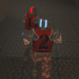

ClanRing Tournament 3 was the first big cross-continental Quake tournament in North America, and arguably the peak of Quake tournament competition before QuakeWorld took over as the common way to play. It was a big event if you were into Quake teamplay, but neither client spectating nor video streaming were at the point where many people could watch the games live. So "demos" (game recordings) from each match were released; you could download a demo and then use your own copy of Quake to watch the game from some player's perspective.
I'm not sure what originally motivated me to do this, but I decided to tweak these demos to make them a little more watchable. I made some Quake player skin variants so that each player on a team could have a unique jersey number, helmet marking, and highlight color (as in the picture above). As the T3 demos came out, I modified them and released edited versions that would render the players in these unique jersies.
Postscript: Many years later, I got a pointer from Richard "Publius" Tollerton to another existing demo of the final game, one created by merging demos from multiple perspectives. This almost-complete coverage of the game results in a demo that you could freely fly around in, to observe the game from whatever angle you like. I gave this demo the same treatment as above (with some other fixes) and added a writeup on how to successfully do the free-fly viewing on a modern system.
I didn't try to catch all of the player POV demos from the early rounds, but I did process most of them from the quarterfinals on. Unfortunately I've lost of some those demos in the intervening years, and I can't find either the edited or original versions anywhere on the net now; Quake demos seem to be more likely to disappear than most other kinds of game artifacts. Still I've got a good set of them remaining, so I've captured them here before any more of them vanish. The readme in the POV-demos bundle is a bit dated but still covers how to play back these demos.
The final game — included in both the POV demos bundle and the freefly demo — is game 3 of the championship match in the low-ping bracket, between Unforgiven & Death Row. These days there are two viable ways to watch the freefly demo of this game. The easy method is to use a Quake engine that natively supports freefly, such as JoeQuake. The fiddlier but retro-aesthetic-approved method uses Keygrip and a WinQuake-ish Quake engine such as Qrusty Quake. The readme in the freefly-demo bundle has all the details about both methods.
The ClanRing T3 Finals Game page also has a YouTube version of this final game, a first-person POV from D11-Thresh.